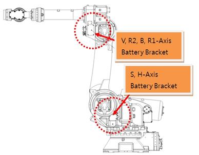

Previous error code: E0224 (○ axis) Abnormal encoder state
1.1.44.1. Outline
While the servo board receives the encoder data periodically through serial communication with the encoder to carry out the servo control of the motor, this error occurs when the data received from the encoder is normal, but as for the encoder data, the result of the monitoring of the inside of the encoder itself is in an erroneous state (BE).
BE (Battery error): This error occurs when the external battery voltage reaches below 3.1 V after the encoder main power is turned off.
1.1.44.2. Causes and examine methods
|
(1) Please check the voltage of encoder’s backup battery.
(2) Please examine the encoder’s battery connection status.
(3) Please replace the motor(encoder) and test it. .
|
(1) Please check the voltage of encoder’s battery.
Encoder’s batter uses 3.6V. If the voltage decreases to 3.0V~3.2V, a message of “W0104 (○ Axis) Encoder battery voltage is low” will be displayed. Please replace the encoder’s battery if this warning occurs. Replacement of encoder’s battery must be done while the controller’s power is on. If the encoder battery is replaced at this stage, Robot’s operation will not be interrupted.
If the encoder battery voltage reaches 2.5–3.0 V after the due date for replacing the encoder battery, the error “E2470 ○ axis encoder abnormal: Required to reset the encoder” will be generated when the controller power is turned on. At the point of this error occurs, the encoder already lost the location data.
Please move the Robot to reference position by using an axis coordinate manual control to re-adjust the axis’s encoder followed by a replacement of encoder’s battery and the reset of encoder.

Figure 1.151 Location of Encoder’s Battery Replacement
Encoder reset can be executed from the below menu.
Ø System
Ø 5. Initialize
Ø 4. Serial encoder reset
(2) Please examine the Encoder’s battery connection status.
Please examine the connection status from encoder’s battery to the motor.
(3) Please replace the motor(encoder) and test it. .
If the error keeps occurring even when turning off/on the main power after resetting the error, replace the motor (encoder) and then test it. If there is no error after the replacement, the servo motor is defective. Replace the servo motor with a normal one.. The following figure shows the position of each of the axis motors of the HS165 robot, while it is required to carry out replacement by referring to the maintenance manual of the relevant equipment in case of other types of robot.

Figure 1.152 Locations of Each Axis’s Motor (HS165 Robot)